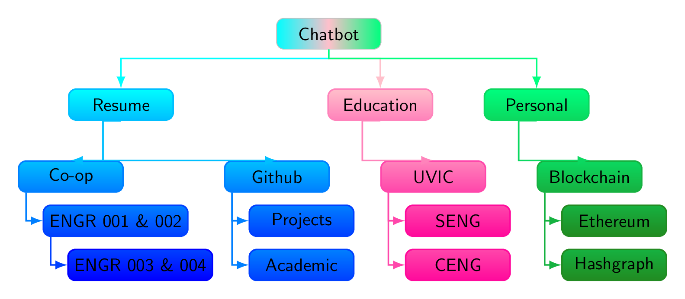

% Decision Tree for conversation
\documentclass[border=10pt,multi,tikz,dvipsnames,svgnames,rgb]{standalone}
\usepackage[edges]{forest}
\usetikzlibrary{arrows.meta}
\forestset{
declare dimen register=gap,
gap'=10mm,
declare count register=twist,
twist'=2,
family tree/.style={
forked edges,
for tree={
rounded corners,
minimum width/.wrap pgfmath arg={##1}{(\textwidth-6*(gap))/3},
minimum height=4ex,
edge={-Latex},
font=\sffamily,
text centered,
% blur shadow,
edge=thick,
},
where={level()<(twist)}{%
parent anchor=children,
l sep+=10pt,
s sep'+=10pt,
}{%
folder,
grow'=0,
l sep'+=2pt,
if={level()==(twist)}{%
before typesetting nodes={child anchor=north},
!u.s sep'+=10pt,
edge path'={%
(!u.parent anchor) -- ++(0,-10pt) -| (.child anchor)
},
}{},
},
},
branch shade/.style args={from #1 to #2}{
before typesetting nodes={
tempcountc/.max={level}{current,tree},
tempcountb/.option=level,
tempcounta=(tempcountc)-(tempcountb)+1,
temptoksa/.option=name,
TeX/.wrap pgfmath arg={
\colorlet{##1col1}{#1}
\colorlet{##1col2}{#2}
}{name()},
for tree={
rounded corners,
top color/.wrap 2 pgfmath args={##2col2!##1!##2col1}{100*((level()-(tempcountb))/(tempcounta))}{(temptoksa)},
+edge/.wrap 2 pgfmath args={##2col2!##1!##2col1}{100*((level()-(tempcountb))/(tempcounta))}{(temptoksa)},
bottom color/.wrap 2 pgfmath args={##2col2!##1!##2col1}{100*((level()-(tempcountb)+1)/(tempcounta))}{(temptoksa)},
draw/.wrap 2 pgfmath args={##2col2!##1!##2col1}{100*((level()-(tempcountb)+1)/(tempcounta))}{(temptoksa)},
thick,
},
}
},
}
\begin{document}
\begin{forest}
family tree,
[Chatbot, left color=cyan, right color=SpringGreen, middle color=Pink, draw=Silver
[Resume, branch shade=from cyan to blue
[Co-op
[ENGR 001 \& 002
[ENGR 003 \& 004]
]
]
[Github
[Projects]
[Academic]
]
]
[Education, branch shade=from Pink to WildStrawberry
[UVIC
[SENG]
[CENG]
]
]
[Personal, branch shade=from SpringGreen to ForestGreen
[Blockchain
[Ethereum]
[Hashgraph]
]
]
]
\end{forest}
%\begin{forest}
% family tree,
% [Grandparent, fill=darkgray, text=Silver, double=Silver, draw=darkgray
% [Parent 1, branch shade=from blue!80 to blue!20
% [Child 1
% [Grandchild 1]
% ]
% ]
% [Parent 2, branch shade=from WildStrawberry!80 to WildStrawberry!20
% [Child 2
% [Grandchild 2]
% ]
% ]
% [Parent 3, branch shade=from ForestGreen!80 to ForestGreen!20
% [Child 3
% [Grandchild 3]
% ]
% ]
% ]
%\end{forest}
\end{document}
%%%%%%%%%%%%%%%%%%%%%%%%%%%%%%%%%%%%%%%%%%%%%%%
%\documentclass[border=10pt]{standalone}
%\usepackage{tikz}
%\usepackage{forest}
%\begin{document}
%\begin{forest}
% roundish filling/.style={%
% draw=#1,
% inner color=#1!25,
% outer color=#1,
% },
% for tree={%
% double,
% rounded corners,
% },
% where level=0{% for the root node
% minimum size=20pt,
% roundish filling=red,
% ultra thick,
% }{%
% if level=1{% middle nodes
% minimum size=15pt,
% semithick,
% roundish filling=blue!50!cyan,
% }
% {% remaining nodes
% delay={%
% if n children=0{%
% label/.wrap pgfmath arg={-90:#1}{content},
% !u.s sep'+=5pt,
% !uu.s sep'+=10pt,
% content=,
% }{},
% },
% green!75!black,
% circle,
% fill,
% fill opacity=.5,
% draw opacity=1,
% draw,
% minimum size=5pt,
% inner sep=0pt,
% },
% },
% [ChatBot
% [B [C][Ch]]
% [D [Dd][E][F][Ff [black]]]
% ]
%\end{forest}
%\end{document}
%%%%%%%%%%%%%%%%%%%%%%%%%%%%%%%%%%%%%%%%%%%
% Reference Decision tree
% Author: Stefan Kottwitz
% https://www.packtpub.com/hardware-and-creative/latex-cookbook
%\documentclass[border=10pt]{standalone}
%\usepackage{tikz}
%\tikzset{
% treenode/.style = {shape=rectangle, rounded corners,
% draw, align=center,
% top color=white, bottom color=blue!20},
% root/.style = {treenode, font=\Large, bottom color=red!30},
% env/.style = {treenode, font=\ttfamily\normalsize},
% dummy/.style = {circle,draw}
%}
%\begin{document}
%\begin{tikzpicture}
% [
% grow = down,
% sibling distance = 6em,
% level distance = 10em,
% edge from parent/.style = {draw, -latex},
% every node/.style = {font=\footnotesize},
% sloped
% ]
% \node [root] {Formula}
% child { node [env] {equation}
% edge from parent node [below] {single-line?} }
% child { node [dummy] {}
% child { node [dummy] {}
% child { node [env] {align\\flalign}
% edge from parent node [above] {at relation sign?} }
% child { node [env] {alignat}
% edge from parent node [above] {at several}
% node [below] {places?} }
% child { node [env] {gather}
% edge from parent node [above] {centered?} }
% edge from parent node [below] {aligned?} }
% child { node [env] {multline}
% edge from parent node [above, align=center]
% {first left,\\centered,}
% node [below] {last right}}
% edge from parent node [above] {multi-line?} };
%\end{tikzpicture}
%\end{document}